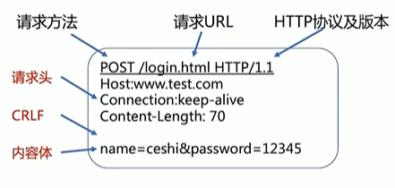
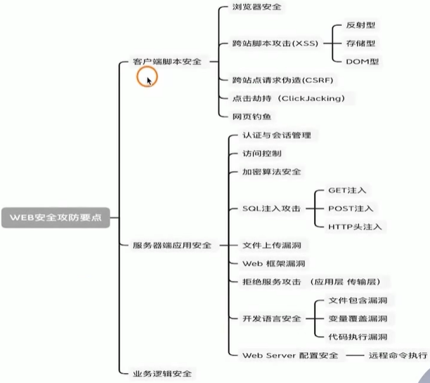

Web安全总览
协议基础
HTTP协议如何工作：
HTTP协议定义了Web客户端如何从Web服务器请求Web页面，以及服务器如何把Web页面传送给客户端。
- 客户端连接到Web服务器 一个HTTP客户端[通常是浏览器]与Web服务器的HTTP端口[默认为80]建立一个TCP套接字连接。
- 发送HTTP请求 通过TCP套接字，客户端向Web服务器发送一个文本的请求报文，一个请求报文由请求行、请求头部、空行和请求数据4部分组成。
- 服务器接受请求并返回HTTP响应 Web服务器解析请求，定位请求资源。服务器将资源复本写到TCP套接字，由客户端读取。 一个响应由状态行、响应头部、空行[请求空行]和响应数据[请求体]4部分组成。
- 释放连接TCP连接 若connection模式为close，则服务器主动关闭TCP连接，客户端被动关闭连接，释放TCP连接。 若connection模式为keepalive，则该连接会保持一段时间，在该时间内可以继续接收请求。
- 客户端浏览器解析HTML内容
HTTP协议

- 请求方法
GET和POST是最常见的HTTP方法,除此以外还包括DELETE、HEAD、OPTIONS、PUT、TRACE。不过，当前的大多数浏览器只支持GET和POST
- 常见的报文头的属性有很多
| GET | POST | |
|---|---|---|
| 参数传递 | 直接拼接在地址栏URL的后面 | 放到请求体里面的 |
| 长度限制 | 有具体的长度限制,一般不超过1024KB | 理论上没有,但是浏览器一般有个界限 |
| 安全 | 好 | |
| 产生一个数据包 | 产生两个数据包 | |
| 浏览器会把http header 和data一并发出去,服务器响应200(返回数据) | 浏览器先发送header,服务器响应100continue，浏览器再发送data，服务器响应200 ok |
安全溯源
